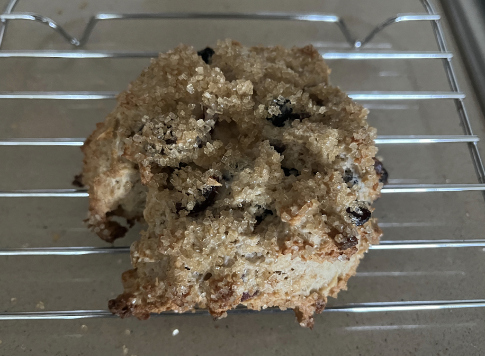

Breakfast
Daddy Bear Oatmeal
- 1/3 cup old fashion oats (Quaker)
- 1/3 cup Bob’s thick oats
- 1 tablespoon steel cut oats
- 1 tablespoon oat groats (optional)
- 1 tablespoon millet seed (optional)
- 1 teaspoon flax seed (optional)
Mix with 1 cup milk (more generous if optional ingredients) in a deep microwavable bowl (so it won’t boil over). Microwave on high for 3 to 3 1/2 minutes, or until reaching a boil. (Stove top cooking is not recommended.) Cover with a plate and let stand for 30 minutes. Can put in refrigerator and warm up the next day.

Scones
- 2 cups all-purpose flour
- 1/2 cup whole wheat flour
- 2 teaspoons baking powder
- 1/2 teaspoon baking soda
- 3/4 teaspoon salt (optional)
- 9 tablespoons unsalted butter cut into 1/2 inch cubes
- 3/4 cup rolled oats
- 3/4 cup fresh or dried blueberries, cranberry, or what you like
- 1 1/2 cup half & half
- 1 teaspoon vanilla
- turbinado sugar (sprinkle on top or coat)
Heat oven to 350. Combine flour, brown sugar, baking powder, and optional salt. Add cubed butter and mix by hand or with a pastry cutter until only pea sized pieces remain. Add fruit and mix, then oatmeal. Mix vanilla with half & half. Slowly add to flour mixture and mix gently with spatula until mixture is moist (take care not to overmix). Scoop 1/2 cup portion of mixture. Gently place into a bowl with turbinado sugar so botton is coated (don’t roll). Move to parchment paper covered pan and dust with turbinado sugar. Bake 20 to 25 minutes at no more than 350 convection (careful that sugar on bottom dose not burn). Cool on rack.

Fruit Smoothy
- 1/4 or more juice of choice
- 8 oz plain kefir
- 4 oz unsweetened yogurt (greek is best)
- 12 oz 2 frozen fruits of choice (mango 4 - 6oz preferred)
- 1/2 or 1 frozen banana
- 1+ tablespoon frozen orange juice
- 1 scoop (about 1/4 cup) unsweetened protein powder
Add ingredients in the order listed above to blender. Mix until smooth. Adjust liquid amount to obtain preferred consistency. Makes 2 large servings.